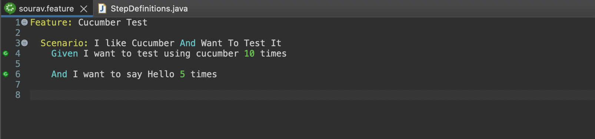
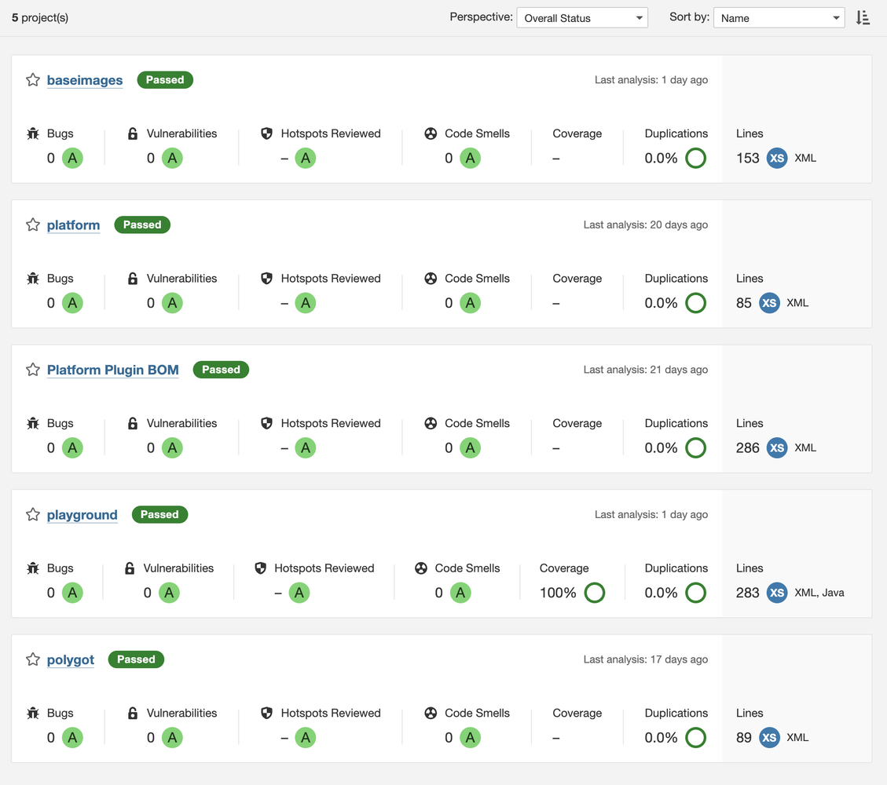

.png)
Introduction
Test-Driven Development (TDD) and Behavior-Driven Development (BDD) have become essential staples in modern software development. These iterative methodologies elevate code quality, foster collaboration, and streamline projects by emphasizing tests and feedback as an integral part of the development cycle. Let's peep deeper into TDD and BDD, their use-case, strengths and real-life scenarios.
Test-Driven Development (TDD)
TDD flips the traditional development model on its head. Here's the core process:
- Write a Failing Test: Before implementing a feature, meticulously design a test case that will initially fail because the functionality doesn't exist. This forces you to define the desired outcome.
- Write Just Enough Code: Focus solely on writing the minimum amount of code necessary to make the test pass. Resist the urge to over-engineer solutions.
- Refactor: Clean up, restructure, and optimize the code, ensuring it remains readable and maintainable. This step is crucial for code health.
TDD Cycle Diagram
Real-World TDD Scenario
Imagine developing a simple calculator. A TDD approach would look like this:
- Test: Write a test case like test_addition() that asserts whether calculator.add(2, 3) equals 5. The test will initially fail.
- Code: Implement the basic add method in the calculator class to make the test pass.
- Refactor: Review the code for conciseness and readability.
Benefits of TDD
- Enhanced Code Design: TDD pushes developers to think critically about functionality, leading to better code structure.
- Quicker Bug Identification: The rapid feedback loop uncovers bugs earlier in the development process.
- Regression Prevention: An established test suite prevents new code from breaking existing features.
- Developer Confidence: Thorough testing boosts developer confidence during development.
- Code Test Coverage: Ensures every line / conditions are tested including error scenarios.
Behavior-Driven Development (BDD)
BDD evolves from TDD, emphasizing collaboration between Developers and Testers and focusing agreement on user behavior. It formalizes requirements as executable specifications using a human-readable language like Gherkin. Gherkin uses keywords like Given, When, Then, And to describe scenarios as shown below:
Example BDD Scenario (Gherkin Syntax):
Gherkin
BDD Process
- Define Behavior: Product owners, developers and testers collaborate to describe desired system behaviors in the form of scenarios.
- Automate Scenarios: Scenarios are translated into automated tests using tools like Cucumber.
- Iterative Development: Developers implement features to make the scenarios pass, closely aligning the code with the defined behavior.
Real-World BDD Scenario
Let's consider an e-commerce application:
- Behavior: A team defines scenarios for adding products to a cart, handling out-of-stock items and applying discounts.
- Automation: The scenarios are converted into tests.
- Development: Developers write code to satisfy the behavior described in the tests.
Benefits of BDD
- Shared Language: BDD's almost native natural language style bridges the gap between technical and non-technical stakeholders.
- Customer Focus: BDD keeps the emphasis on meeting real customer needs.
- Living Documentation: The scenarios serve as up-to-date documentation that reflects system behavior.
- Early Feedback: Frequent testing enables quick adjustments based on feedback.
Difference between TDD vs. BDD
| # | Feature | TDD | BDD |
|---|---|---|---|
| 1 | Focus | Technical implimentation | User-Centric behaviour |
| 2 | Language | Programming Language-Specific | Natural Language using Gherkin |
| 3 | Scope | Unit tests | Feature-level tests |
| 3 | Participants | Primarily developers | Developers, testers, product owners |
When to Choose TDD, BDD or Both
- TDD: Ideal for projects with high technical complexity or where the requirements are well understood.
- BDD: Excels in scenarios with strong user-facing aspects or complex business logic.
- Combined: These methodologies work flawlessly together, with TDD addressing the nuts and bolts, while BDD ensures the overall system aligns with user expectations.
Success Criteria
A good quality software artifact / component should pass various quality standards defined in a central place like SonarQube ensuring adherence of good software development practices.
The below mentioned screenshot shows good coverage and zero code smell as a passing criteria achieved via TDD and BDD approach:
Conclusion
TDD and BDD offer a path towards a more collaborative and user-centered approach to development. Are you ready to take your software to the next level? Consider incorporating these techniques into your next project. Let me know in the comments how these methodologies have transformed your development process!